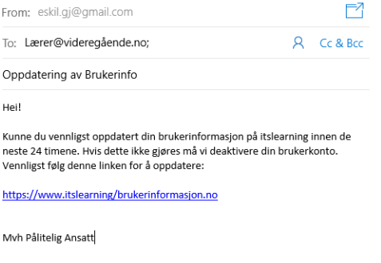

“Spoofing” er når en mottaker blir kontaktet fra en kilde de i utgangspunktet er kjent ved og/eller har en opparbeidet tillit til fra før, men som ikke er den de utgir seg for å være. Et spoofing angrep er når en person (som regnes som spooferen/svindleren) later som de er noen andre for å kunne lure andre personer til å dele deres personlige data, eller gjennomføre en handling på vegne av svindleren. For vedkommende som ønsker å spoofe handler mye om å bygge opp en tillit hos vedkommende. Derfor er tilfeller med spoofing ofte et resultat av en lengre periode hvor svindleren bruker tid til å skaffe seg tillit hos vedkommende slik at sannsynligheten for at de lykkes øker. .
Hva er spoofing?
Spoofing handler om å få noe til å forsvinne.Etter å ha definert hva spoofing er kan man videre se på hvilke former og utgaver som finnes. Først og fremst er telefonen en potensiell og ofte brukt kilde for en svindler. La oss for eksempel si man blir oppringt og personen på den andre enden presenterer seg som en representant fra din bank. Her prøver personen å danne et tillitsbånd til deg via telefonen. Utover i samtalen vil vedkommende kanskje begynne å spørre deg om å dele personopplysninger, kontoopplysninger osv. du ellers aldri ville delt. Her bør det etterhvert gå noen alarmer som sier at her er det noe galt. Det å klare å skjønne når man blir utsatt for et svindler angrep som spoofing er ikke alltid like lett, men man kan unngå dette i stor grad ved bruk av sunn fornuft og tenkte “er dette normalt å spørre om/etter”.
Er tillit et suksessfaktor for et spoofing angrep?
Nei, absolutt ikke. Det siste en svindler trenger for å lykkes er vedkommendes tillit.Som ved mange cyber-angrep/svindler forsøk er det ofte igjennom email det åpner seg opp muligheter. Email er og har blitt et sentralt og viktig verktøy i hverdagen til arbeidslivsnæringen, og også på hjemmefronten. Dette bringer med seg store fordeler, men også ulemper. Med et så lettvint verktøy for kommunikasjon med andre er det klart det blir brukt som en standard hos de aller fleste. Samtidig er også email den kilden man ser er mest utbredt for hackere, svindlere osv. for å trenge inn i andres privatliv.
Vi har mange ulike kilder, men via hvilken er det mest vanlig at et cyber-angrep foreløper?
Over TelefonenVidere kan man se på spoofing via email som har samme utseende som et annen type angrep, nemlig “phishing”. Her sendes det mailer ut til brukere hvor avsender (svindleren) gjerne bruker kjente logoer og bilder som skal skape tillit hos mottakerne. Her ønsker de ofte å fremstille seg selv som en representant av kjente banker, bedrifter og/eller aktører i tilknytning av rettssystemer nettopp fordi det skaper tillit hos bruker, samt informasjon av verdi lettere kan lekkes. Samtidig kan det også være at svindleren bruker navn på personer du allerede har en tilknytning til som avsender. Eksempelvis her kan det være en kollega av deg, eller kanskje også sjefen din. Mer om phishing senere, men det er viktig å få frem at spoofing også ofte foregår via email.
Hvordan kan man lettest mulig unngå spoofing og andre typer angrep?
Bruk sunn fornuft og ta kontakt med fagpersoner ved usikkerhet.Phising, eller nettfisking på norsk, er en type svindelforsøk hackere bruker for å få tilgang til ditt system eller dine opplysninger. Phising er i bunn og grunn når hackere sender en “luremail” til en person, ofte med en link eller med opplysninger som vil lure mottakeren. Gjennom Phishing prøver hackeren ofte å gjøre en av to ting. Enten hente ut personopplysninger om brukeren, eller “legge” igjen malware. Hackeren kan altså bruke Phishing til å hente ut brukernavn og passord fra offeret sitt for å få tilgang til resten av systemet, eller for infisere systemet gjennom et program som hackeren lurer inn i brukerens system. .
Den vanligste måten en hacker bruker Phishing på for å lure til seg sensitiv informasjon, er på mange måter lik spoofing. Hackeren sender en forfalsket mail enten ved å utgi seg for å være en tillitsfull person eller bedrift. Hackeren bruker lang tid for at mailen de sender skal se ekte ut, med offisielle symboler og navn. I mailen vil hackeren ofte skrive at mottakeren må sende en slags sensitiv informasjon, de sier at de trenger dette på grunn av flere forskjellige grunner. Mottakeren av mailen vil se dette og ofte sende avgårde informasjonen sin, siden de har tillit til at mailen er fra en person/bedrift de har tillit til. Hackere skriver ofte at det haster at mottakeren sender den sensitive informasjonen, siden det er en slags tidsfrist. I slike tilfeller vil enda flere bli lurt til å sende informasjonen sin, siden de stresser seg opp og bare får det gjort for å bli ferdig.
Hva er Phishing?
En type svindelforsøk, ofte gjennom mail, hvor hackere lurer brukere til å oppgi sensitiv informasjon eller laste ned malware.Hackere kan også bruke Phishing til å lure mottakeren av mailen til å laste ned malware på systemet sitt. Den enkleste måten en hacker kan få tilgang til ditt system på, er gjennom deg. Mennesket er som oftest det svakeste leddet i et system. Et vanlig Phishing Angrep er at en hacker sender en forfalsket mail med en type link som innhold. Mailen er ofte så godt forfalsket at den overbeviser mottakeren at mailen er ekte og fra en person/bedrift de stoler på. Hvis hackeren har lagt med en link i mailen vil mottakeren tro at dette er en ufarlig link og kanskje trykke på den uten å tenke så mye over det. Hvis offeret blir lurt til å trykke på en slik link, vil ofte en av to ting skje: Linken vil starte en nedlasting av et malware-program, eller linken vil lede til en side som sier at du har virus. Deretter vil siden fortelle deg at du må laste ned et spesielt program for å bli kvitt denne malwaren. Uheldigvis er som oftest dette programmet en slags malware i seg selv. På denne måten har hackeren klart å lure deg til å selv laste ned malware på din egen pc, og gitt seg selv tilgang på systemet gjennom din pc. Alt dette gjennom en forfalsket mail, en litt uoppmerksom ansatt og ett tastetrykk.
Du får en e-post fra kollega Asgeir med en link som virker tilsynelatende legitim. Likevel finner du noen småfeil i rettskrivingen. Hvordan burde du tenke rundt dette?
Dette er en trygg lenke uten grunn til bekymring siden Asgeir er en grei fyr og han ville aldri gjort noe for å stjele eller ødelegge informasjonen minPhishing er en svært vanlig måte for hackere å angripe på. I 2016 ble det gjort en undersøkelse av et data sikkerhetsfirma som fant ut at hver 2596 epost de så gjennom, var et forsøk på phishing angrep. I første kvartal av 2016 fant de også ut at det var 20 000 unike phishing kampanjer og 120 000 nettsteder som eksklusivt eksisterte med mål å gjennomføre en phishing-angrep. I 2018 skriver et sikkerhetsfirma at nesten 20% av alle cryptovalute - eiere har blitt prøvd å svindlet gjennom Phishing bare i løpet av 2018. Det samme sikkerhetsfirmaet fant 482 millioner forsøk på Phishing angrrep i 2018.
Hvor utbredt er Phishing?
Phishing forekommer svært sjeldent, du vil sannsynligvis aldri bli utsatt for dette.Siden det er to hovedmåter hackere bruker Phishing på, kan man også si at det er to hovedmåter å beskytte seg mot det på. Den ene måten er å beskytte systemet sitt, mens den andre måten er å “beskytte” de ansatte i systemet.
Når det kommer til å beskytte datasystemet sitt, så er det viktig å oppdatere systemene så man vet at de inneholder de siste sikkerhetsoppdateringene. Man kan også sette restriksjoner på mail, som kan hindre at Phishing angrep og hackeres mailer går gjennom til inbokser.
Det aller viktigste en bedrift kan gjøre både for å beskytte datasystemene sine og sensitiv informasjon er å lære opp de ansatte. De ansatte er det svakeste leddet i et system og det vil alltid være gjennom de ansatte at et Phishing angrep vil bli iverksatt. Uansett om hackeren bruker Phishing angrep for å lure en ansatt til å oppgi sensitiv informasjon eller til å laste ned et farlig program, er det alltid den ansatte som tar valget. Ved å lære opp ansatte til å kjenne igjen hva som er et forsøk på Phishing angrep og ikke, kan en organisasjon spare seg for masse problemer. Det viktigste rådet til en ansatt som leser en litt ukjent epost er alltid å stoppe å tenke gjennom eposten, før man klikker noe.
Under ser du et eksempel på hvordan en phishing link kan se ut. Mailen ser svært ufarlig ut, den inneholder bare en link til et svært kjent nettsted. Men med en gang man beveger musen over linken kan man se at det er en skjult link. Man kommer ikke til itslearning ved å trykke på linken, men et helt annet nettsted som hackeren har bestemt.
For å beskytte deg selv mot phishing anbefaler vi hvertfall at du tar deg god tid når du leser over mail, spesielt mailer som inneholder lenker. Alltid vær på vakt og husk at det er mer enn bare stjeling av informasjon som kan foregå. Ikke vær redd for å be om hjelp.